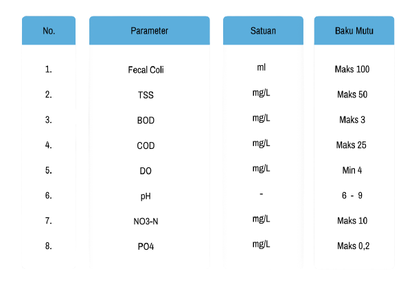

Pengertian - Pengertian Kandungan Air:
Chemical Oxygen Demand (COD)
Merupakan kebutuhan oksigen kimia untuk mengurai seluruh bahan organic yang Terkandung dalam air, Standar Baku Mutu Dari Kandungan COD yaitu 25mg/L
Biological Oxygen Demand (BOD)
Merupakan jumlah oksigen terlarut yang diperlukan oleh mikroorganisme untuk mengurai Bahan organic didalam air Standar Baku Mutu Dari Kandungan BOD yaitu 3mg/L
Dissolved Oxygen (DO)
Merupakan kandungan oksigen yang berasal dari fotosintesa dan absorbs atmosfer/udara. Dan Terlarut di dalam air sebagai parameter untuk mengukur Kualitas air serta proses pengolahan Limbah organik maupun anorganik. Standar Baku Mutu Dari Kandungan DO yaitu 4mg/L
Total suspended solid (TSS)
Merupakan residu dari padatan total yang tertahan oleh saringan dengan ukuran partikel maksimal 2μm (Mikrometer) atau lebih besar dari ukuran partikel koloid. Standar Baku Mutu Dari Kandungan TSS yaitu 50mg/L
Coliform Fecal (Bakteri Feral Coli)
Merupakan Bakteri yang digunakan sebagai indikator pendeteksi Virus, Protozoa dan Parasite dalam pencemaran air. Standar Baku Mutu Dari Kandungan Fecal Colli yaitu 1000ml
Power of Hydrogen (PH)
Merupakan derajat keasaman atau kebasaan suatu larutan, menyatakan logaritma negative Konsentrasi ion H dengan bilangan pokok 10. Larutan netral mempunyai PH 7, asam lebih Kecil dari 7, basa lebih besar dari 7. Di perairan yang tidak tercemar PH di control oleh ion CO2, Carbonate dan Bicarbonate. Standar Baku Mutu Dari Kandungan pH yaitu 6-9
Nitrat (NO3 -N)
Merupakan bentuk utama nitrogen di perairan alami dan merupakan nutrient utama bagi pertumbuhan tanaman dan algae. Nitrat sangat mudah larut dalam air dan bersifat stabil. Standar Baku Mutu Dari Kandungan NO3 -N yaitu 10mg/L
Fosfat (PO4)
Merupakan bentuk fosfor yang dapat dimanfaatkan oleh tumbuhan dan merupakan unsur esensial bagi tumbuhan tingkat tinggi dan algae sehingga dapat mempengaruhi tingkat produktivitas perairan. Standar Baku Mutu Dari Kandungan PO4 yaitu 0,2mg/L